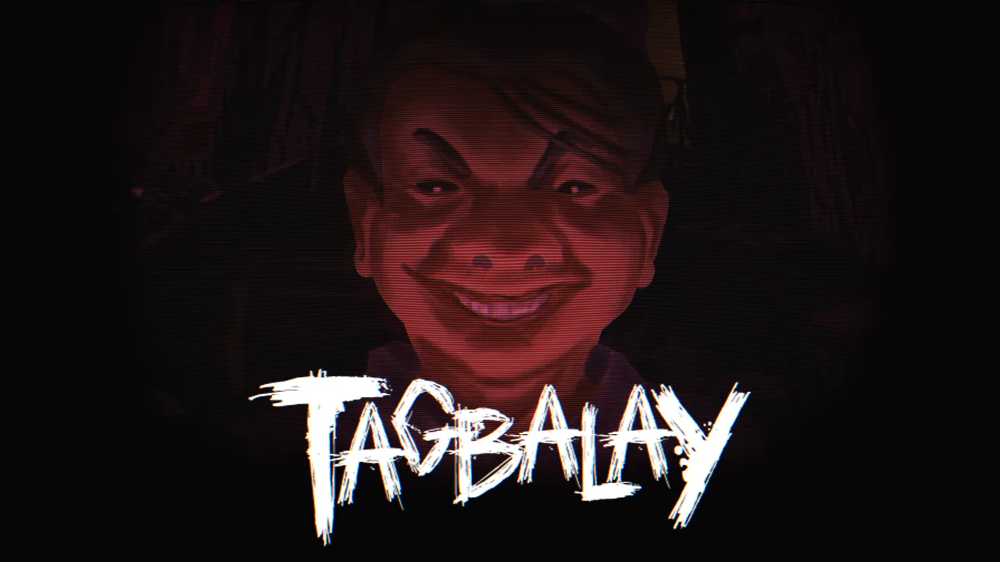

Tagbalay — a psychological survival horror game

Early Access
Who you let in could cost you everything.
Fully voiced in Hiligaynon, with subtitles.
A knock at the door.
Tagbalay is a social, psychological, and survival horror game about poverty, desperation, and the weight of survival. With your sick mother depending on you and her debts now your responsibility, you must make ends meet on a minimum-wage salary, balancing work, medicine, and much-needed rest.
But when night falls, strangers begin knocking at your door, each bringing their own stories, problems, and demands. Decide who to trust, who to help, and who to turn away, knowing that letting the wrong person inside could cost you everything.
In a world where everyone has something to lose, the greatest horrors may not be monsters, but the people standing on the other side of your door.
Download Tagbalay
Early access: Tagbalay is in active development, so expect bugs and changes. Current build: v0.5.0 (game jam release). Download it directly from the official release and verify the file before you run it.
Verify your download
SHA-256
01965D8AA5D7604A5905AE33DD1E0DBF9CADBE23BE039644732F9DC3A5B490DE
On Windows, run certutil -hashfile Tagbalay-Windows.zip SHA256 in a terminal and compare the result. You can also read the public VirusTotal report.
Frequently asked
What is Tagbalay?
Tagbalay is a social, psychological, and survival horror game by YUME Interactive about poverty, desperation, and the weight of survival. You look after your sick mother, work a minimum-wage job, and decide which night-time visitors to let into your home.
What language is Tagbalay in?
Tagbalay is fully voiced in Hiligaynon, with subtitles.
Who made Tagbalay?
Tagbalay is developed by YUME Interactive, an indie game studio.
How do I check that the download is safe?
Compare the SHA-256 checksum of your file with the one listed above, and review the public VirusTotal report linked in the download section.